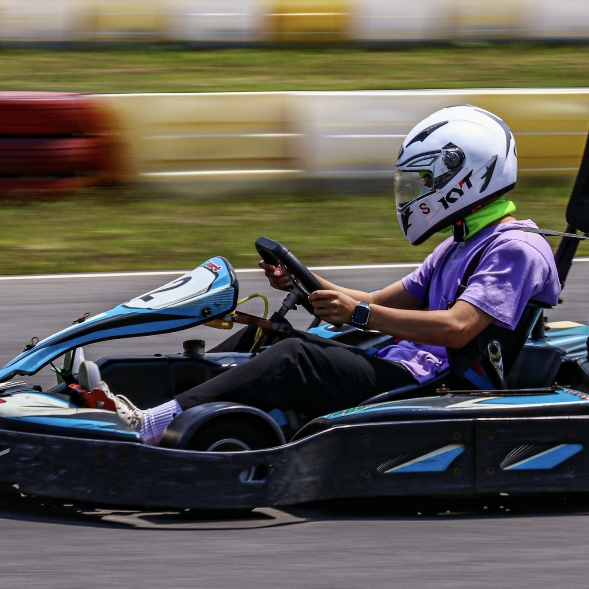

我們的主旨
台灣東部開發較少，保留了許多大自然的氣息，很多值得我們去探討發掘的細節。
而東部對我們而言格外的陌生，所以我們決定藉由此次機會更了解台灣東部。
組員

宋永麒
這學期的學習進展順利，我很高興能夠學到許多關於網頁設計的技術。透過課程的教導，我成功完成了兩個網站的開發，這給了我很大的成就感。這些經驗讓我更加了解網頁設計的各個方面，包括前端開發、後端處理和資料庫管理等等。
感謝老師的耐心指導，也要特別感謝我的組員李竣暘，我們在合作中互相學習並克服了許多難題。
李竣暘
這次期末的作業真的非常浩大，雖然從期中報告就知道這是一個工程很大的作業。但我基本上還是對網頁設計這堂課有保持著一定的興趣，沒有因為作業而消磨掉，不過能力上可能不允許。
但經過這一學期的課程，我學習到了很多這個領域的東西，很感謝老師的教導，也很感謝跟我同組的宋永麒。
指導老師
郝光中老師
目前任職於實踐大學資訊模擬與設計學系助理教授。曾於2000年獲美國紐約理工學院大眾傳播學碩士學位。2016年獲得國立台北科技大學設計博士學位。曾於2013年獲得國際自行車設計大賽的金獎，2014年獲iF概念設計大獎。研究方向為數位遊戲式學習，互動介面設計，AR/VR設計及數位設計實務等。